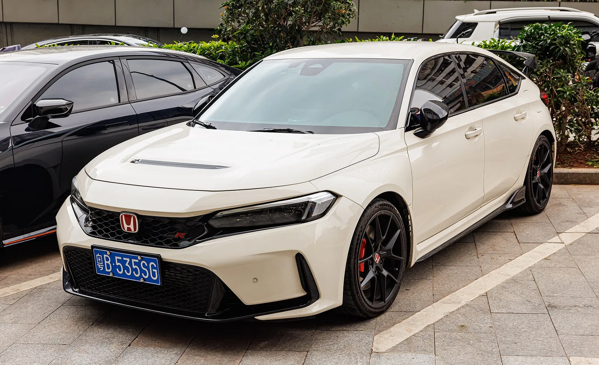
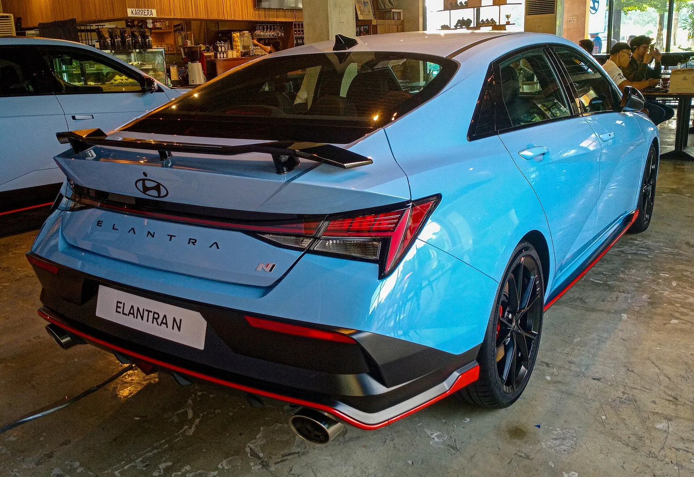

▲ 아반떼 N. 3만5,300달러에 276마력, 수동을 고를 수 있다
수동변속기를 고를 수 있는 고성능 세단이 계속 줄고 있습니다.
미국 시장에서 4만 달러 아래로 내려오면 이제 둘뿐입니다.
스바루 WRX와 현대 아반떼 N입니다. 그리고 둘 다 시빅 타입R보다 1만 달러 이상 쌉니다.

▲ 시빅 타입R 4만7,395달러가 이 비교의 기준선이 된다 ⓒ Wikimedia Commons
1. 가격 — 타입R이 기준선
| 모델 | 기본가 | 도착비 포함 |
|---|---|---|
| 스바루 WRX | 3만2,495달러 | 3만3,690달러 |
| 현대 아반떼 N | 3만5,300달러 | 3만6,595달러 |
| 혼다 시빅 타입R | 4만7,395달러 | 4만8,590달러 |
타입R과의 격차가 큽니다. WRX는 1만4,900달러, 아반떼 N은 1만1,995달러가 쌉니다. 우리 돈으로 1,600만~2,000만 원 수준의 차이입니다.
2. 제원 비교
| 항목 | WRX | 아반떼 N | 시빅 타입R |
|---|---|---|---|
| 엔진 | 2.4L 터보 수평대향 4기통 | 2.0L 터보 직렬 4기통 | 2.0L 터보 직렬 4기통 |
| 출력 | 271마력 | 276마력 | 315마력 |
| 토크 | 258lb-ft | 289lb-ft | 310lb-ft |
| 구동 | 상시 사륜 | 전륜 | 전륜 |
| 변속기 | 6단 수동 / SPT | 수동 / DCT | 수동만 |
| 0-60mph | 약 5.7초 | 5초 중반 (DCT는 5초 이하) | 5.3초 (실측 4.9초) |
📍 이 표에서 가장 큰 차이
출력이 아니라 구동 방식입니다. WRX는 스바루의 상시 사륜구동을 씁니다. 아반떼 N과 타입R은 전륜입니다. 마른 노면의 랩타임에서는 전륜 고성능차가 앞서기도 하지만, 비·눈·비포장에서는 이야기가 완전히 달라집니다.
WRX가 271마력으로 가장 낮은데도 0-60이 크게 뒤지지 않는 것도 사륜 덕입니다. 출발에서 접지를 잃지 않기 때문입니다.

▲ WRX는 수평대향 4기통에 상시 사륜구동을 조합한다 ⓒ Wikimedia Commons
3. 보증에서 갈린다
가격표에 안 나오지만 소유 비용에 크게 작용하는 항목입니다.
| 브랜드 | 기본 보증 | 파워트레인 |
|---|---|---|
| 현대 | 5년 / 6만 마일 | 10년 / 10만 마일 |
| 혼다 | 3년 / 3.6만 마일 | — |
고성능차에서 이 차이는 체감이 큽니다. 험하게 타는 차일수록 보증 기간이 실질적인 가치가 됩니다.
4. 원문의 결론
비교 기사는 아반떼 N을 최선의 선택으로 꼽았습니다.
| 항목 | 내용 |
|---|---|
| 가격 대비 성능 | 타입R보다 1만1,995달러 싸면서 276마력 |
| 보증 | 동급에서 가장 길다 |
| 선택지 | 수동과 DCT 모두 고를 수 있다 |
| 남는 예산 | 1만 달러 이상을 다른 데 쓸 수 있다 |
WRX를 고를 이유는 분명합니다. 사륜구동입니다. 눈이 잦거나 노면이 나쁜 지역이라면 이 하나로 결론이 납니다.
다만 WRX 기본 트림은 실내 마감과 사양이 아쉽다는 지적이 따릅니다. 이를 보완한 tS 트림은 4만4,995달러로 올라가는데, 여기까지 가면 가격 우위가 크게 줄어듭니다.

▲ 아반떼 N은 수동과 DCT를 모두 고를 수 있다 ⓒ Wikimedia Commons
5. 국내 상황은 다르다
국내에서는 이 비교가 그대로 성립하지 않습니다.
| 모델 | 국내 |
|---|---|
| 아반떼 N | 판매 중 |
| 스바루 WRX | 미판매 — 스바루는 국내 철수 상태 |
| 시빅 타입R | 정식 판매되지 않는다 |
국내에서 이 가격대의 수동 고성능차를 찾는다면 사실상 아반떼 N이 유일한 선택지입니다. 경쟁이 없다는 뜻이기도 하고, 그만큼 이 차가 갖는 자리가 특수하다는 뜻이기도 합니다.
📍 수동변속기가 계속 줄어드는 이유
수요가 줄어든 것이 가장 큰 이유지만, 인증 비용도 작용합니다. 변속기가 하나 늘면 배출가스·연비 인증을 따로 받아야 합니다. 판매량이 작은 사양일수록 이 비용을 정당화하기 어렵습니다. DCT가 수동보다 빠르다는 점도 성능 관점의 명분을 약하게 만들었습니다.
6. 정리
미국에서 4만 달러 아래 수동 고성능 세단은 스바루 WRX와 현대 아반떼 N 둘로 좁혀졌습니다.
WRX는 3만2,495달러에 271마력과 상시 사륜, 아반떼 N은 3만5,300달러에 276마력과 전륜입니다. 시빅 타입R 대비 각각 1만4,900달러, 1만1,995달러가 쌉니다.
가장 큰 차이는 출력이 아니라 구동 방식입니다. 노면 조건이 나쁜 지역이라면 WRX의 사륜이, 그 외에는 가격과 보증에서 앞선 아반떼 N이 유리합니다. 다만 국내에서는 WRX와 타입R을 정식으로 살 수 없습니다.